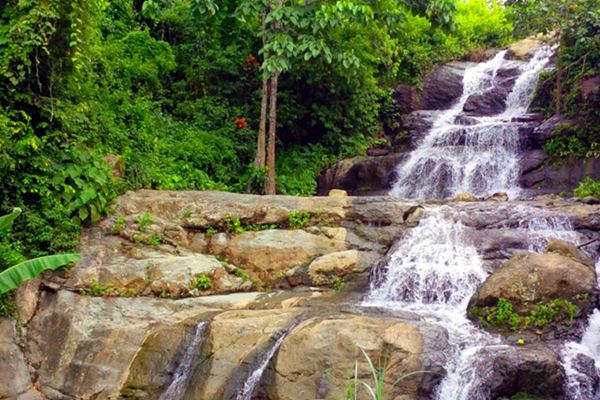

AIR TERJUN SEPUTIH JEMBER
Sesuai dengan namanya yang terletak di desa Seputih, kecamatan Mayang. Untuk menuju ke lokasi air terjun dari kota Jember menuju arah timur ke Banyuwangi, setelah tiba di SPBU Mayang, belok ke kanan hingga sampai di perempatan dan ambil arah lurus sampai bertemu petunjuk jalan yang bertuliskan arah air terjun Seputih. Selanjutnya perjalanan melewati permukiman penduduk dengan jalan tanah yang hanya bisa dilewati kendaraan roda dua atau motor. Pengunjung bisa menitipkan kendaraannya atau parkir di rumah penduduk di ujung jalan perkampungan, dari sini perjalanan dilanjutkan dengan berjalan kaki melewati jalan setapak dan pada musim penghujan cukup licin jadi hati-hati.
Setelah sampai di lokasi pengunjung akan disambut suara gemercik air yang memecah kesunyian dengan pemandangan alamnya yang indah yang dihiasi persawahan dan perbukitan dengan pepohonan yang rimbun. Air terjun Seputih ini memiliki dua tingkat, dengan tingkatan pertama lebih landai dan diatasnya lagi terdapat mirip kolam penampungan yang airnya berasal dari air terjun di tingkat dua yang terletak lebih tinggi. Di tempat ini pengunjung bisa berendam sepuasnya merasakan segarnya air pegunungan yang bersih, alami dan dingin.
PANTAI DI JEMBER
@ DESTINASI JEMBER SITE BY ADEL